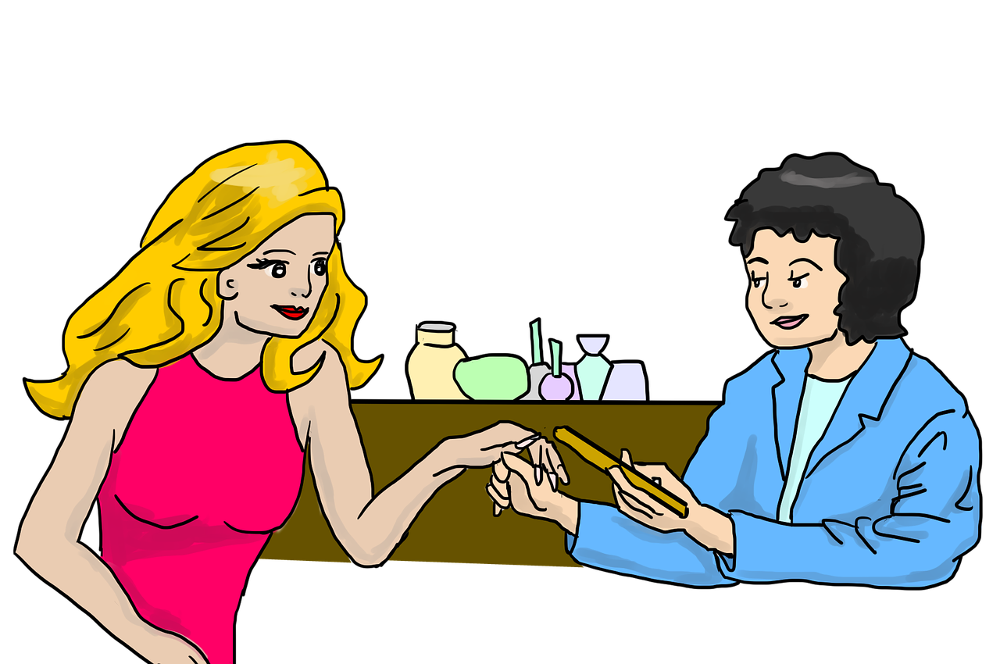

Bespoke Aesthetics Stamford is not just a beauty company; it's a sanctuary where self-care meets sophistication. Nestled in the heart of Stamford, it offers a haven of tranquility where clients can indulge in a personalized journey to rediscover their natural beauty. From bespoke facials tailored to individual skin needs to luxurious spa treatments that rejuvenate both body and mind, every experience at Bespoke Aesthetics Stamford is crafted with meticulous attention to detail. With a team of skilled aestheticians and therapists dedicated to enhancing each client's unique features, it's a destination where beauty is not just seen but felt, leaving everyone who walks through its doors feeling pampered, refreshed, and radiant.

At Bespoke Aesthetics Stamford, relaxation and juvenation await you in a tranquil oasis of beauty and serenity. Step into our sanctuary and let the stresses of the day melt away as you indulge in a range of luxurious treatments designed to pamper your body and soul. From soothing massages that ease tension to rejuvanating facials that leave your skin glowing, our skilled therapists are dedicated to crafting personalised experiences that cater to your every need. With a calming ambiance and attention to detail in every aspect of you visit, you'll emerge from Bespoke Aesthetics Stamford feeling refreshed, renewed, and ready to take on the world with a newfound sense of radience and vitality.
Vicky Sallis, the esteemed owner of Bespoke Aesthetics Stamford, brings a wealth of expertise and passion to the realm of beauty and wellness. With a distinguished background as a highly qualified beauty professional, Vicky's commitment to excellence shines through in every aspect of her business. The name "Bespoke Aesthetics Stamford" holds a special significance, paying homage to her father whose initials were also BAS. It's a tribute to her roots and the values instilled by her family, reflecting the dedication to personalized care and attention to detail that defines the ethos of the establishment. Under Vicky's leadership, Bespoke Aesthetics Stamford has become synonymous with unparalleled quality, where clients not only receive exceptional treatments but also experience a sense of belonging and connection that sets it apart.